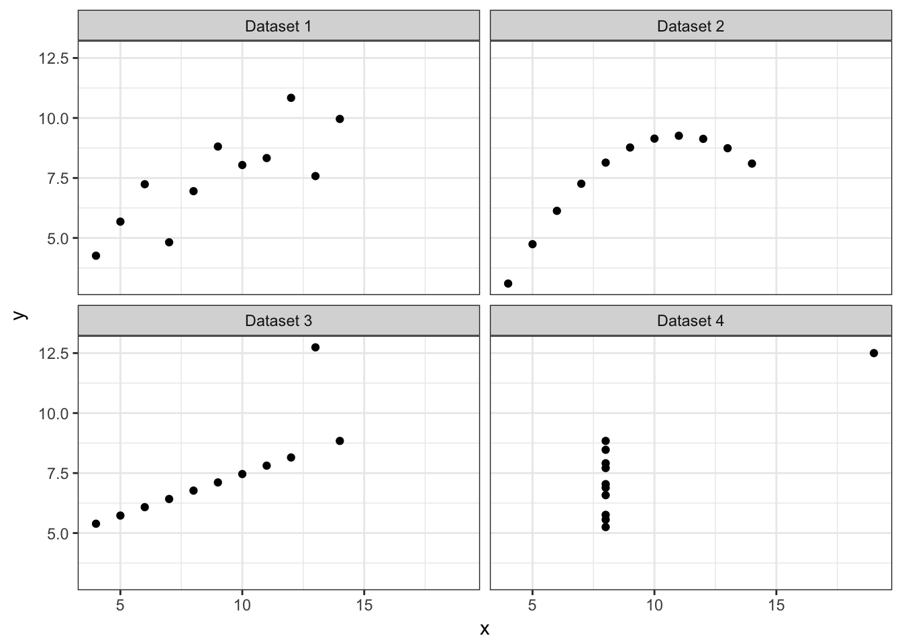
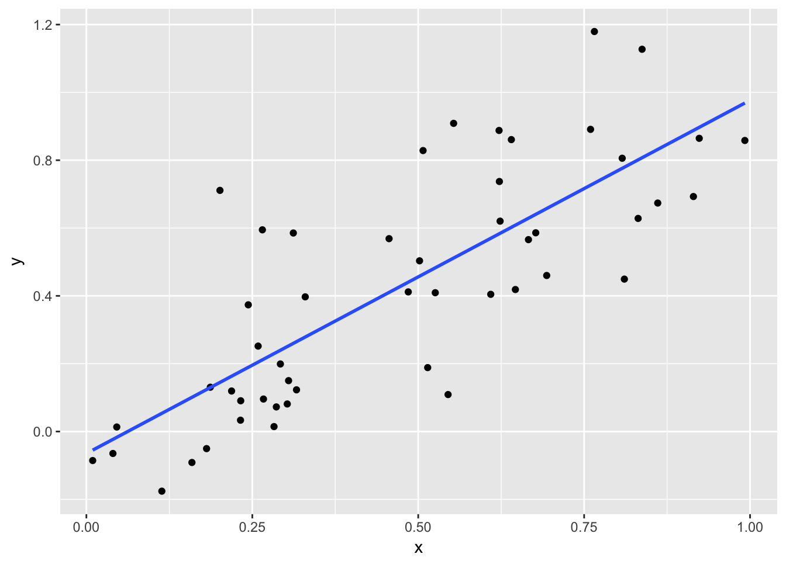
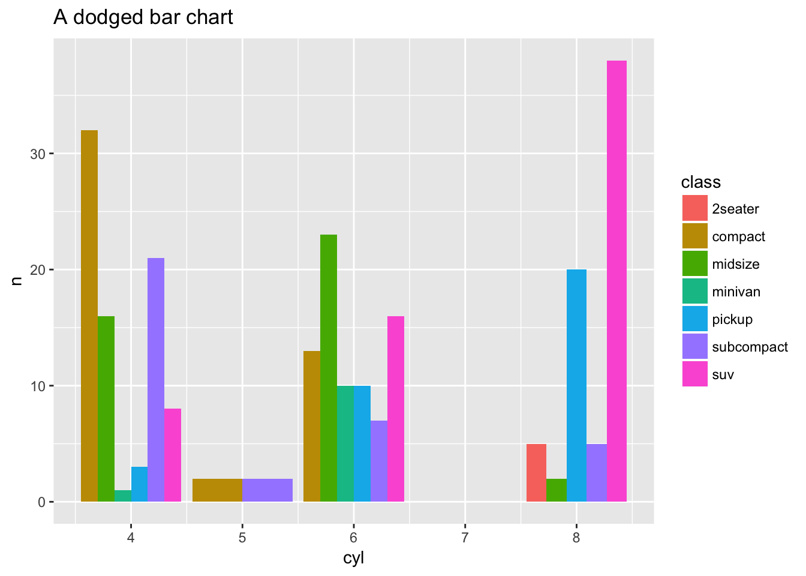
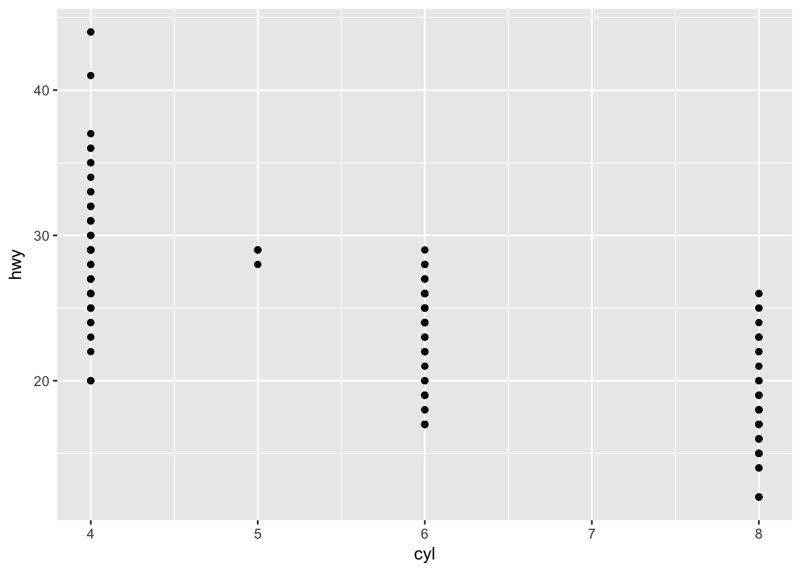
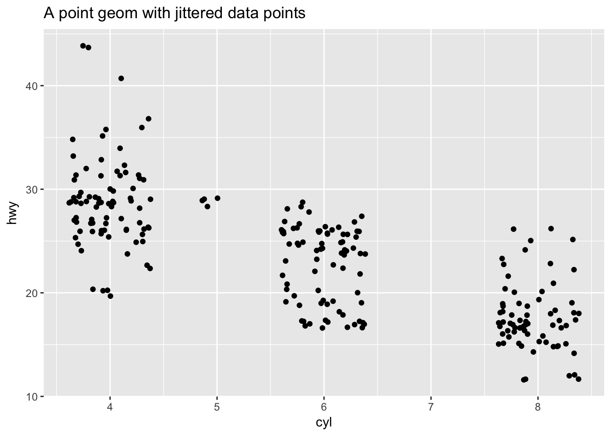
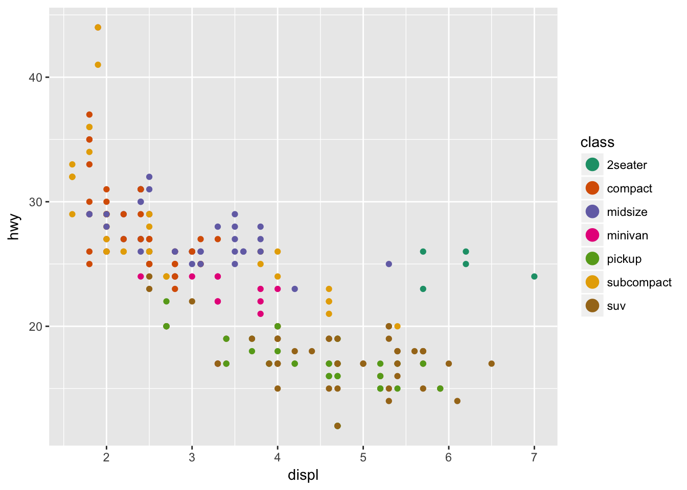
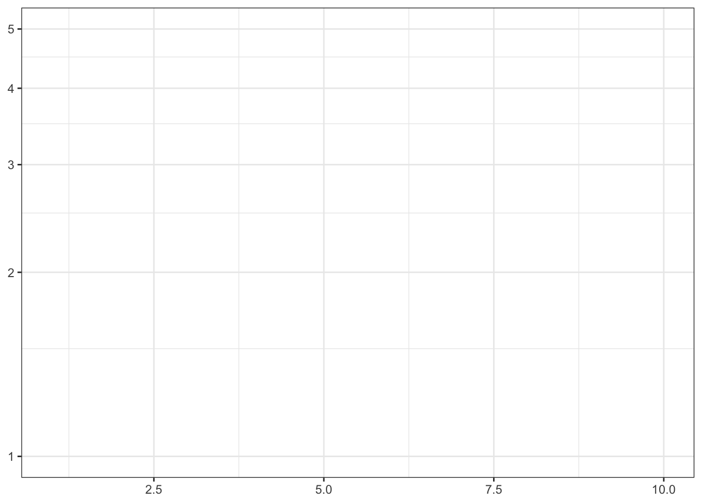
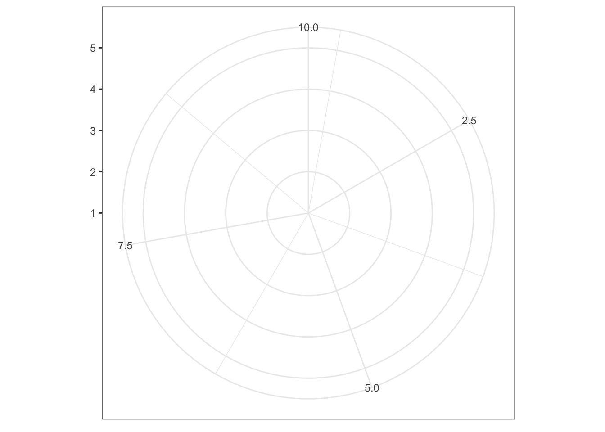
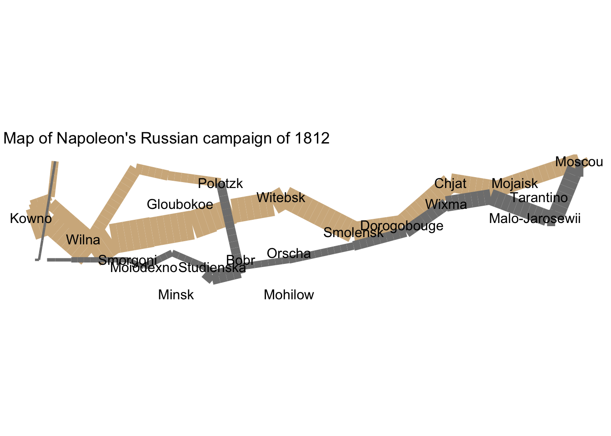

Visualizations and the grammar of graphics
Objectives
- Identify the importance of graphics in communicating information
- Define the layered grammar of graphics
- Practice generating layered graphics using
ggplot2
library(tidyverse)
library(knitr)
library(broom)
library(stringr)Identify the importance of graphics in communicating information
Research methods classes in graduate school generally teach important skills such as probability and statistical theory, regression, analysis of variance (ANOVA), maximum likelihood estimation (MLE), etc. While these are important methods for analyzing data and assessing research questions, sometimes drawing a picture (aka visualization) can be more precise than conventional statistical computations.1
Consider the following data sets:
| x | y |
|---|---|
| 10 | 8.04 |
| 8 | 6.95 |
| 13 | 7.58 |
| 9 | 8.81 |
| 11 | 8.33 |
| 14 | 9.96 |
| 6 | 7.24 |
| 4 | 4.26 |
| 12 | 10.84 |
| 7 | 4.82 |
| 5 | 5.68 |
| x | y |
|---|---|
| 10 | 9.14 |
| 8 | 8.14 |
| 13 | 8.74 |
| 9 | 8.77 |
| 11 | 9.26 |
| 14 | 8.10 |
| 6 | 6.13 |
| 4 | 3.10 |
| 12 | 9.13 |
| 7 | 7.26 |
| 5 | 4.74 |
| x | y |
|---|---|
| 10 | 7.46 |
| 8 | 6.77 |
| 13 | 12.74 |
| 9 | 7.11 |
| 11 | 7.81 |
| 14 | 8.84 |
| 6 | 6.08 |
| 4 | 5.39 |
| 12 | 8.15 |
| 7 | 6.42 |
| 5 | 5.73 |
| x | y |
|---|---|
| 8 | 6.58 |
| 8 | 5.76 |
| 8 | 7.71 |
| 8 | 8.84 |
| 8 | 8.47 |
| 8 | 7.04 |
| 8 | 5.25 |
| 19 | 12.50 |
| 8 | 5.56 |
| 8 | 7.91 |
| 8 | 6.89 |
What are the corresponding relationships between \(X\) and \(Y\)? Using traditional metrics, the relationships appear identical across the samples:
| \(N\) | \(\bar{X}\) | \(\bar{Y}\) | \(R^2\) |
|---|---|---|---|
| 11 | 9 | 7.500909 | 0.8164205 |
| \(N\) | \(\bar{X}\) | \(\bar{Y}\) | \(R^2\) |
|---|---|---|---|
| 11 | 9 | 7.500909 | 0.8162365 |
| \(N\) | \(\bar{X}\) | \(\bar{Y}\) | \(R^2\) |
|---|---|---|---|
| 11 | 9 | 7.5 | 0.8162867 |
| \(N\) | \(\bar{X}\) | \(\bar{Y}\) | \(R^2\) |
|---|---|---|---|
| 11 | 9 | 7.500909 | 0.8165214 |
If we estimated linear regression models for each dataset, we would obtain virtually identical coefficients (again suggesting the relationships are identical):
|
|
|
|
But what happens if we draw a picture?

A good picture tells the reader much more than any table or text can provide.
The layered grammar of graphics
Google defines a grammar as “the whole system and structure of a language or of languages in general, usually taken as consisting of syntax and morphology (including inflections) and sometimes also phonology and semantics.”2 Others consider a grammar to be “the fundamental principles or rules of an art or science.”3 Applied to visualizations, a grammar of graphics is a grammar used to describe and create a wide range of statistical graphics.4
The layered grammar of graphics approach is implemented in ggplot2, a widely used graphics library for R. All graphics in this library are built using a layered approach, building layers up to create the final graphic.
Components of the layered grammar of graphics
- Layer
- Data
- Mapping
- Statistical transformation (stat)
- Geometric object (geom)
- Position adjustment (position)
- Scale
- Coordinate system (coord)
- Faceting (facet)
- Defaults
- Data
- Mapping
Layer
Layers are used to create the objects on a plot. They are defined by five basic parts:
- Data
- Mapping
- Statistical transformation (stat)
- Geometric object (geom)
- Position adjustment (position)
Layers are typically related to one another and share many common features. For instance, multiple layers can be built using the same underlying data. An example would be a scattterplot overlayed with a smoothed regression line to summarize the relationship between the variables:

Data and mapping
Data defines the source of the information to be visualized, but is independent from the other elements. So a layered graphic can be built which can utilize different data sources while keeping the other components the same. Here is a portion of a dataset contained in the ggplot2 package: mpg.
head(mpg) %>%
kable(caption = "Dataset of automobiles")| manufacturer | model | displ | year | cyl | trans | drv | cty | hwy | fl | class |
|---|---|---|---|---|---|---|---|---|---|---|
| audi | a4 | 1.8 | 1999 | 4 | auto(l5) | f | 18 | 29 | p | compact |
| audi | a4 | 1.8 | 1999 | 4 | manual(m5) | f | 21 | 29 | p | compact |
| audi | a4 | 2.0 | 2008 | 4 | manual(m6) | f | 20 | 31 | p | compact |
| audi | a4 | 2.0 | 2008 | 4 | auto(av) | f | 21 | 30 | p | compact |
| audi | a4 | 2.8 | 1999 | 6 | auto(l5) | f | 16 | 26 | p | compact |
| audi | a4 | 2.8 | 1999 | 6 | manual(m5) | f | 18 | 26 | p | compact |
Mapping defines how the variables are applied to the graphic. So if we were graphing information from mpg, we might map a car’s engine displacement to the \(x\) position and highway mileage to the \(y\) position.
mpg %>%
select(displ, hwy) %>%
rename(x = displ,
y = hwy)## # A tibble: 234 × 2
## x y
## <dbl> <int>
## 1 1.8 29
## 2 1.8 29
## 3 2.0 31
## 4 2.0 30
## 5 2.8 26
## 6 2.8 26
## 7 3.1 27
## 8 1.8 26
## 9 1.8 25
## 10 2.0 28
## # ... with 224 more rowsStatistical transformation
A statistical transformation (stat) transforms the data, generally by summarizing the information. For instance, in a bar graph you typically are not trying to graph the raw data because this doesn’t make any inherent sense. Instead, you might summarize the data by graphing the total number of observations within a set of categories. Or if you have a dataset with many observations, you might transform the data into a smoothing line which summarizes the overall pattern of the relationship between variables.
A stat takes a dataset as input and returns a dataset as output, and so a stat can add new variables to the original dataset. So instead of graphing this data in its raw form:
mpg %>%
select(cyl)## # A tibble: 234 × 1
## cyl
## <int>
## 1 4
## 2 4
## 3 4
## 4 4
## 5 6
## 6 6
## 7 6
## 8 4
## 9 4
## 10 4
## # ... with 224 more rowsYou would transform it to:
mpg %>%
count(cyl)## # A tibble: 4 × 2
## cyl n
## <int> <int>
## 1 4 81
## 2 5 4
## 3 6 79
## 4 8 70Sometimes you don’t need to make a statistical transformation. For example, in a scatterplot you use the raw values for the \(x\) and \(y\) variables to map onto the graph. In these situations, the statistical transformation is an identity transformation - the stat simply passes in the original dataset and exports the exact same dataset.
Geometric objects
Geometric objects (geoms) control the type of plot you create. Geoms are classified by their dimensionality:
- 0 dimensions - point, text
- 1 dimension - path, line
- 2 dimensions - polygon, interval
Each geom can only display certain aesthetics. For example, a point geom has position, color, shape, and size aesthetics.
ggplot(mpg, aes(displ, hwy, color = class)) +
geom_point() +
ggtitle("A point geom with position and color aesthetics")
A bar geom has position, height, width, and fill color.
ggplot(mpg, aes(cyl)) +
geom_bar() +
ggtitle("A bar geom with position and height aesthetics")
Position adjustment
Sometimes with dense data we need to adjust the position of elements on the plot, otherwise data points might obscure one another. Bar plots frequently stack or dodge the bars to avoid overlap:
count(mpg, class, cyl) %>%
ggplot(aes(cyl, n, fill = class)) +
geom_bar(stat = "identity") +
ggtitle("A stacked bar chart")
count(mpg, class, cyl) %>%
ggplot(aes(cyl, n, fill = class)) +
geom_bar(stat = "identity", position = "dodge") +
ggtitle("A dodged bar chart")
Sometimes scatterplots with few unique \(x\) and \(y\) values are jittered (random noise is added) to reduce overplotting.
ggplot(mpg, aes(cyl, hwy)) +
geom_point() +
ggtitle("A point geom with obscured data points")
ggplot(mpg, aes(cyl, hwy)) +
geom_jitter() +
ggtitle("A point geom with jittered data points")
Scale
A scale controls how data is mapped to aesthetic attributes, so we need one scale for every aesthetic property employed in a layer. For example, this graph defines a scale for color:
ggplot(mpg, aes(displ, hwy, color = class)) +
geom_point() +
guides(color = guide_legend(override.aes = list(size = 4)))
Note that the scale is consistent - every point for a compact car is drawn in tan, whereas SUVs are drawn in pink. The scale can be changed to use a different color palette:
ggplot(mpg, aes(displ, hwy, color = class)) +
geom_point() +
scale_color_brewer(palette = "Dark2") +
guides(color = guide_legend(override.aes = list(size = 4)))
Now we are using a different palette, but the scale is still consistent: all compact cars utilize the same color, whereas SUVs use a different color but each SUV uses the same color.
Coordinate system
A coordinate system (coord) maps the position of objects onto the plane of the plot, and control how the axes and grid lines are drawn. Plots typically use two coordinates (\(x, y\)), but could use any number of coordinates. Most plots are drawn using the Cartesian coordinate system:
x1 <- c(1, 10)
y1 <- c(1, 5)
p <- qplot(x1, y1, geom = "blank", xlab = NULL, ylab = NULL) +
theme_bw()
p 
This system requires a fixed and equal spacing between values on the axes. That is, the graph draws the same distance between 1 and 2 as it does between 5 and 6. The graph could be drawn using a semi-log coordinate system which logarithmically compresses the distance on an axis:
p + coord_trans(y = "log10")
Or could even be drawn using polar coordinates:
p + coord_polar()
Faceting
Faceting can be used to split the data up into subsets of the entire dataset. This is a powerful tool when investigating whether patterns are the same or different across conditions, and allows the subsets to be visualized on the same plot (known as conditioned or trellis plots). The faceting specification describes which variables should be used to split up the data, and how they should be arranged.
ggplot(mpg, aes(displ, hwy)) +
geom_point() +
facet_wrap(~class)
Defaults
Rather than explicitly declaring each component of a layered graphic (which will use more code and introduces opportunities for errors), we can establish intelligent defaults for specific geoms and scales. For instance, whenever we want to use a bar geom, we can default to using a stat that counts the number of observations in each group of our variable in the \(x\) position.
ggplot() +
layer(
data = mpg, mapping = aes(x = displ, y = hwy),
geom = "point", stat = "identity", position = "identity"
) +
scale_x_continuous() +
scale_y_continuous() +
coord_cartesian()
The above code:
- Creates a new plot object (
ggplot) - Adds a layer (
layer)- Specifies the data (
mpg) - Maps engine displacement to the \(x\) position and highway mileage to the \(y\) position (
mapping) - Uses the point geometric transformation (
geom = "point") - Implements an identity transformation and position (
stat = "identity"andposition = "identity")
- Specifies the data (
- Establishes two continuous position scales (
scale_x_continuousandscale_y_continuous) - Declares a cartesian coordinate system (
coord_cartesian)
How can we simplify this using intelligent defaults?
- We only need to specify one geom and stat, since each geom has a default stat.
- Cartesian coordinate systems are most commonly used, so it is the default.
- Default scales can be added based on the aesthetic and type of variables.
- Continuous values are transformed with a linear scaling.
- Discrete values are mapped to integers.
- Scales for aesthetics such as color, fill, and size can also be intelligently defaulted.
Using these defaults, we can rewrite the above code as:
ggplot() +
geom_point(data = mpg, mapping = aes(x = displ, y = hwy))
Because multiple layers can use the same components (data, mapping, etc.), we can specify that information in the ggplot function rather than in the layer function:
ggplot(data = mpg, mapping = aes(x = displ, y = hwy)) +
geom_point()
And as we will learn, function arguments in R use specific ordering, so we can omit the explicit call to data and mapping:
ggplot(mpg, aes(displ, hwy)) +
geom_point()
With this specification, it is easy to build the graphic up with additional layers, without modifying the original code:
ggplot(mpg, aes(displ, hwy)) +
geom_point() +
geom_smooth()## `geom_smooth()` using method = 'loess'
Because we called aes(x = displ, y = hwy) within the ggplot function, it is automatically passed along to both geom_point() and geom_smooth().
How to build a complicated, layered graphic
Charles Minard’s map of Napoleon’s disastrous Russian campaign of 1812

The graphic is notable for its representation in two dimensions of six types of data: the number of Napoleon’s troops; distance; temperature; the latitude and longitude; direction of travel; and location relative to specific dates.5
Building Minard’s map in R
# get data on troop movements and city names
troops <- read_table("data/minard-troops.txt")
cities <- read_table("data/minard-cities.txt")
troops## # A tibble: 51 × 5
## long lat survivors direction group
## <dbl> <dbl> <int> <chr> <int>
## 1 24.0 54.9 340000 A 1
## 2 24.5 55.0 340000 A 1
## 3 25.5 54.5 340000 A 1
## 4 26.0 54.7 320000 A 1
## 5 27.0 54.8 300000 A 1
## 6 28.0 54.9 280000 A 1
## 7 28.5 55.0 240000 A 1
## 8 29.0 55.1 210000 A 1
## 9 30.0 55.2 180000 A 1
## 10 30.3 55.3 175000 A 1
## # ... with 41 more rowscities## # A tibble: 20 × 3
## long lat city
## <dbl> <dbl> <chr>
## 1 24.0 55.0 Kowno
## 2 25.3 54.7 Wilna
## 3 26.4 54.4 Smorgoni
## 4 26.8 54.3 Moiodexno
## 5 27.7 55.2 Gloubokoe
## 6 27.6 53.9 Minsk
## 7 28.5 54.3 Studienska
## 8 28.7 55.5 Polotzk
## 9 29.2 54.4 Bobr
## 10 30.2 55.3 Witebsk
## 11 30.4 54.5 Orscha
## 12 30.4 53.9 Mohilow
## 13 32.0 54.8 Smolensk
## 14 33.2 54.9 Dorogobouge
## 15 34.3 55.2 Wixma
## 16 34.4 55.5 Chjat
## 17 36.0 55.5 Mojaisk
## 18 37.6 55.8 Moscou
## 19 36.6 55.3 Tarantino
## 20 36.5 55.0 Malo-JarosewiiGrammar of Minard’s graphic
Exercise: Write out what the grammar of graphics will look for this graph.
Click here for solution
- Layer
- Data -
troops - Mapping
- \(x\) and \(y\) - troop position (
latandlong) - Size -
survivors - Color -
direction
- \(x\) and \(y\) - troop position (
- Statistical transformation (stat) -
identity - Geometric object (geom) -
path - Position adjustment (position) - none
- Data -
- Layer
- Data -
cities - Mapping
- \(x\) and \(y\) - city position (
latandlong) - Label -
city
- \(x\) and \(y\) - city position (
- Statistical transformation (stat) -
identity - Geometric object (geom) -
text - Position adjustment (position) - none
- Data -
- Scale
- Size - range of widths for troop
path - Color - colors to indicate advancing or retreating troops
- Size - range of widths for troop
- Coordinate system - map projection (Mercator or something else)
- Faceting - none
Write the R code
First we want to build the layer for the troop movement:
plot_troops <- ggplot(troops, aes(long, lat)) +
geom_path(aes(size = survivors,
color = direction,
group = group))
plot_troops
Next let’s add the cities layer:
plot_both <- plot_troops +
geom_text(data = cities, aes(label = city), size = 4)
plot_both
Now that the basic information is on there, we want to clean up the graph and polish the visualization by:
- Adjusting the size scale aesthetics for troop movement to better highlight the loss of troops over the campaign.
- Change the default colors to mimic Minard’s original grey and tan palette.
- Change the coordinate system to a map-based system that draws the \(x\) and \(y\) axes at equal intervals.
- Give the map a title and remove the axis labels.
plot_polished <- plot_both +
scale_size(range = c(0, 12),
breaks = c(10000, 20000, 30000),
labels = c("10,000", "20,000", "30,000")) +
scale_color_manual(values = c("tan", "grey50")) +
coord_map() +
labs(title = "Map of Napoleon's Russian campaign of 1812",
x = NULL,
y = NULL)
plot_polished
Finally we can change the default ggplot theme to remove the background and grid lines, as well as the legend:
plot_polished +
theme_void() +
theme(legend.position = "none")
Practice generating layered graphics using ggplot2
Now let’s practice generating layered graphics in R using the data from Gapminder World, which compiles country-level data on quality-of-life measures.
Load the gapminder dataset
If you have not already installed the gapminder package and you try to load it using the following code, you will get an error:
library(gapminder)Error in library(gapminder) : there is no package called ‘gapminder’If this happens, install the gapminder package by running install.packages("gapminder") in your console.
Once you’ve done this, run the following code to load the gapminder dataset, the ggplot2 library, and a helper library for printing the contents of gapminder:
library(ggplot2)
library(tibble)
library(gapminder)
str(gapminder)## Classes 'tbl_df', 'tbl' and 'data.frame': 1704 obs. of 6 variables:
## $ country : Factor w/ 142 levels "Afghanistan",..: 1 1 1 1 1 1 1 1 1 1 ...
## $ continent: Factor w/ 5 levels "Africa","Americas",..: 3 3 3 3 3 3 3 3 3 3 ...
## $ year : int 1952 1957 1962 1967 1972 1977 1982 1987 1992 1997 ...
## $ lifeExp : num 28.8 30.3 32 34 36.1 ...
## $ pop : int 8425333 9240934 10267083 11537966 13079460 14880372 12881816 13867957 16317921 22227415 ...
## $ gdpPercap: num 779 821 853 836 740 ...gapminder## # A tibble: 1,704 × 6
## country continent year lifeExp pop gdpPercap
## <fctr> <fctr> <int> <dbl> <int> <dbl>
## 1 Afghanistan Asia 1952 28.8 8425333 779
## 2 Afghanistan Asia 1957 30.3 9240934 821
## 3 Afghanistan Asia 1962 32.0 10267083 853
## 4 Afghanistan Asia 1967 34.0 11537966 836
## 5 Afghanistan Asia 1972 36.1 13079460 740
## 6 Afghanistan Asia 1977 38.4 14880372 786
## 7 Afghanistan Asia 1982 39.9 12881816 978
## 8 Afghanistan Asia 1987 40.8 13867957 852
## 9 Afghanistan Asia 1992 41.7 16317921 649
## 10 Afghanistan Asia 1997 41.8 22227415 635
## # ... with 1,694 more rowsRun
?gapminderin the console to open the help file for the data and definitions for each of the columns.
Using the grammar of graphics and your knowledge of the ggplot2 library, generate a series of graphs that explore the relationships between specific variables.
Exercises
What is the average life expectancy, per continent?
Click for the solution
ggplot(gapminder, aes(continent, lifeExp)) +
geom_boxplot()
What is the relationship between GDP and life expectancy?
Click for the solution
ggplot(gapminder, aes(gdpPercap, lifeExp)) +
geom_point() +
geom_smooth()## `geom_smooth()` using method = 'gam'
What is causing the outlier in gdpPercap?
Click for the solution
ggplot(gapminder, aes(gdpPercap, lifeExp)) +
geom_point() +
geom_smooth() +
geom_text(aes(label = country))## `geom_smooth()` using method = 'gam'
Session Info
devtools::session_info()## Session info --------------------------------------------------------------## setting value
## version R version 3.3.2 (2016-10-31)
## system x86_64, darwin13.4.0
## ui RStudio (1.0.44)
## language (EN)
## collate en_US.UTF-8
## tz America/Chicago
## date 2017-01-06## Packages ------------------------------------------------------------------## package * version date source
## assertthat 0.1 2013-12-06 CRAN (R 3.3.0)
## backports 1.0.4 2016-10-24 CRAN (R 3.3.0)
## base64enc 0.1-3 2015-07-28 CRAN (R 3.3.0)
## bit 1.1-12 2014-04-09 CRAN (R 3.3.0)
## bit64 0.9-5 2015-07-05 CRAN (R 3.3.0)
## broom * 0.4.1 2016-06-24 CRAN (R 3.3.0)
## car 2.1-4 2016-12-02 CRAN (R 3.3.2)
## caret 6.0-73 2016-11-10 CRAN (R 3.3.2)
## codetools 0.2-15 2016-10-05 CRAN (R 3.3.2)
## colorspace 1.3-2 2016-12-14 CRAN (R 3.3.2)
## config 0.2 2016-08-02 CRAN (R 3.3.0)
## DBI 0.5-1 2016-09-10 CRAN (R 3.3.0)
## devtools 1.12.0 2016-06-24 CRAN (R 3.3.0)
## digest 0.6.11 2017-01-03 CRAN (R 3.3.2)
## dplyr * 0.5.0 2016-06-24 CRAN (R 3.3.0)
## evaluate 0.10 2016-10-11 CRAN (R 3.3.0)
## foreach 1.4.3 2015-10-13 CRAN (R 3.3.0)
## foreign 0.8-67 2016-09-13 CRAN (R 3.3.2)
## gapminder * 0.2.0 2015-12-31 CRAN (R 3.3.0)
## ggplot2 * 2.2.1 2016-12-30 CRAN (R 3.3.2)
## gtable 0.2.0 2016-02-26 CRAN (R 3.3.0)
## highr 0.6 2016-05-09 CRAN (R 3.3.0)
## htmltools 0.3.5 2016-03-21 CRAN (R 3.3.0)
## httr 1.2.1 2016-07-03 CRAN (R 3.3.0)
## iterators 1.0.8 2015-10-13 CRAN (R 3.3.0)
## jsonlite 1.2 2016-12-31 CRAN (R 3.3.2)
## knitr * 1.15.1 2016-11-22 cran (@1.15.1)
## labeling 0.3 2014-08-23 CRAN (R 3.3.0)
## lattice 0.20-34 2016-09-06 CRAN (R 3.3.2)
## lazyeval 0.2.0 2016-06-12 CRAN (R 3.3.0)
## lme4 1.1-12 2016-04-16 cran (@1.1-12)
## lubridate * 1.6.0 2016-09-13 CRAN (R 3.3.0)
## magrittr 1.5 2014-11-22 CRAN (R 3.3.0)
## MASS 7.3-45 2016-04-21 CRAN (R 3.3.2)
## Matrix 1.2-7.1 2016-09-01 CRAN (R 3.3.2)
## MatrixModels 0.4-1 2015-08-22 CRAN (R 3.3.0)
## memoise 1.0.0 2016-01-29 CRAN (R 3.3.0)
## mgcv 1.8-16 2016-11-07 CRAN (R 3.3.0)
## minqa 1.2.4 2014-10-09 cran (@1.2.4)
## mnormt 1.5-5 2016-10-15 CRAN (R 3.3.0)
## ModelMetrics 1.1.0 2016-08-26 CRAN (R 3.3.0)
## modeltools 0.2-21 2013-09-02 CRAN (R 3.3.0)
## multidplyr 0.0.0.9000 2016-11-23 Github (hadley/multidplyr@f6bece5)
## munsell 0.4.3 2016-02-13 CRAN (R 3.3.0)
## nlme 3.1-128 2016-05-10 CRAN (R 3.3.2)
## nloptr 1.0.4 2014-08-04 cran (@1.0.4)
## NLP 0.1-9 2016-02-18 CRAN (R 3.3.0)
## nnet 7.3-12 2016-02-02 CRAN (R 3.3.2)
## nycflights13 0.2.1 2016-12-30 CRAN (R 3.3.2)
## pbkrtest 0.4-6 2016-01-27 CRAN (R 3.3.0)
## plyr 1.8.4 2016-06-08 CRAN (R 3.3.0)
## psych 1.6.9 2016-09-17 cran (@1.6.9)
## purrr * 0.2.2 2016-06-18 CRAN (R 3.3.0)
## quantreg 5.29 2016-09-04 CRAN (R 3.3.0)
## R6 2.2.0 2016-10-05 CRAN (R 3.3.0)
## rappdirs 0.3.1 2016-03-28 CRAN (R 3.3.0)
## rcfss * 0.1.0 2016-10-06 local
## Rcpp 0.12.8 2016-11-17 CRAN (R 3.3.2)
## readr * 1.0.0 2016-08-03 CRAN (R 3.3.0)
## readxl * 0.1.1 2016-03-28 CRAN (R 3.3.0)
## reshape2 1.4.2 2016-10-22 CRAN (R 3.3.0)
## rjson 0.2.15 2014-11-03 cran (@0.2.15)
## rmarkdown 1.3 2016-12-21 CRAN (R 3.3.2)
## rplos 0.6.4 2016-11-24 CRAN (R 3.3.2)
## rprojroot 1.1 2016-10-29 CRAN (R 3.3.0)
## rsconnect 0.7 2016-12-21 CRAN (R 3.3.2)
## rstudioapi 0.6 2016-06-27 CRAN (R 3.3.0)
## scales 0.4.1 2016-11-09 CRAN (R 3.3.1)
## slam 0.1-40 2016-12-01 CRAN (R 3.3.2)
## solr 0.1.6 2015-09-17 CRAN (R 3.3.0)
## sparklyr * 0.5.1 2016-12-19 CRAN (R 3.3.2)
## SparseM 1.74 2016-11-10 CRAN (R 3.3.2)
## stringi 1.1.2 2016-10-01 CRAN (R 3.3.0)
## stringr * 1.1.0 2016-08-19 cran (@1.1.0)
## tibble * 1.2 2016-08-26 cran (@1.2)
## tidyr * 0.6.0 2016-08-12 CRAN (R 3.3.0)
## tidyverse * 1.0.0 2016-09-09 CRAN (R 3.3.0)
## titanic * 0.1.0 2015-08-31 CRAN (R 3.3.0)
## tm 0.6-2 2015-07-03 CRAN (R 3.3.0)
## topicmodels * 0.2-4 2016-05-23 CRAN (R 3.3.0)
## twitteR 1.1.9 2015-07-29 CRAN (R 3.3.0)
## whisker 0.3-2 2013-04-28 CRAN (R 3.3.0)
## withr 1.0.2 2016-06-20 CRAN (R 3.3.0)
## XML 3.98-1.5 2016-11-10 CRAN (R 3.3.2)
## yaml 2.1.14 2016-11-12 cran (@2.1.14)Example drawn from The Visual Display of Quantitative Information by Edward Tufte↩
Wickham, Hadley. (2010) “A Layered Grammar of Graphics”. Journal of Computational and Graphical Statistics, 19(1).↩
Wilkinson, Leland. (2005). The Grammar of Graphics. (UChicago authentication required)↩
This exercise is drawn from Wickham, Hadley. (2010) “A Layered Grammar of Graphics”. Journal of Computational and Graphical Statistics, 19(1).↩
This work is licensed under the CC BY-NC 4.0 Creative Commons License.